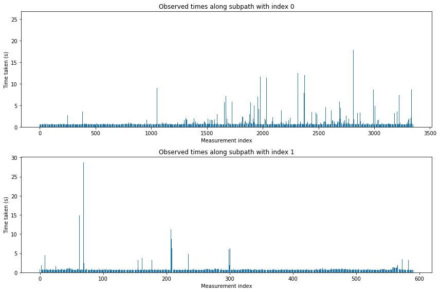

The script shown here is taken from our CHEP 2019 paper, for which we made our experiments easy to reproduce and publicly available (see here).
The aim of the script is to show the observed times taken to reach one point from another and how they differ depending on the path taken through the function.
We will explain how the script uses data collected at runtime to create a visual display of the observed time taken by a run along a subpath.
First, let's import the modules we will need and set the path to server and the monitored service. This script was designed to be self-contained, so the va.prepare("verdicts.db") command sets up an instance of VyPR's server in the background. Since it takes some time to start running, we have to poll it until it responds in order to make sure that the connection is set up before we try to perform the analysis.
The name of the database which stores performance data is, in this case, 'verdicts.db'. However, in general, the server can be started based on any other available database, provided that it is reachable by an SQLite connection, by simply calling this function with the string (the name of that database) as an argument.
import sys
import ast
import matplotlib
import matplotlib.pyplot as plt
from dateutil.parser import isoparse
import traceback
import json
import argparse
import VyPRAnalysis as va
va.prepare("verdicts.db")
va.set_monitored_service_path("uploader-experiments/uploader/")
from VyPR.SCFG.parse_tree import ParseTree
The following section of code begins with fetching a list of functions from the database and selecting the function server-app.metadata_handler_MetadataHandler:__init__ (creating an object instance representing this function with the corresponding attributes' values). We also need its symbolic control-flow graph, the object representing a directed graph, whose structure is derived from the source code being monitored by VyPR. This object will be important for reconstructing the paths taken.
The next step is to iterate through all the calls of this function and the failed verdicts detected during each call and compare two different subpaths in terms of the observed time taken for the program run along each subpath. More precisely, for every such verdict, we take two observations - each storing the data about the recorded value of the specified property of interest (i.e. duration). Sorting them by the value of sub_index (in ascending order) ensures that the left-hand side path always refers to the observation with the sub-index value 0, which is recorded first. The rhs_path stores the path taken to the point that happens later during the run, and it is the time between those two events that we want to analyse. Both paths contain the part of the run between the beginning of the run and the first observation (this is exactly what is stored in the LHS path, but the RHS also contains the rest of the path up to the second observation). Using the path difference to get the subpath taken between those two points and the grammar derived from the SCFG, it is possible to construct a parse tree with the information about the path between the two observations.
The most important output of this section is the list of parse trees which record the paths and the intersection of those trees.
metadata_function = va.list_functions()[2]
scfg = metadata_function.get_scfg()
grammar = scfg.derive_grammar()
calls = metadata_function.get_calls()
n_of_calls = len(calls)
parse_trees_obs_value_pairs = []
for (n, call) in enumerate(calls):
verdicts = call.get_verdicts()
for verdict in verdicts:
if verdict.binding == 3 and verdict.verdict == 0:
observations = sorted(verdict.get_observations(), key=lambda obs : obs.sub_index)
try:
lhs_path = observations[0].reconstruct_reaching_path(scfg)
rhs_path = observations[1].reconstruct_reaching_path(scfg)
path_difference = rhs_path[len(lhs_path):]
parse_tree = ParseTree(path_difference, grammar, path_difference[0]._source_state)
lhs_time = isoparse(ast.literal_eval(observations[0].observed_value)["time"])
rhs_time = isoparse(ast.literal_eval(observations[1].observed_value)["time"])
time_taken = (rhs_time - lhs_time).total_seconds()
parse_trees_obs_value_pairs.append((parse_tree, time_taken))
except:
pass
parse_trees, times = zip(*parse_trees_obs_value_pairs)
intersection = parse_trees[0].intersect(parse_trees[1:])
Now we are ready to construct a simple dictionary, the keys of which will be 0 and 1 - each representing the index of the subpath taken to generate the corresponding observation. Values that belong to them are lists containing the observed durations. We begin with getting the paths through the intersection parse tree to any path parameters.
path_parameters = []
intersection.get_parameter_paths(intersection._root_vertex, [], path_parameters)
parameter_value_indices_to_times = {}
subpaths = []
n_of_trees = len(parse_trees)
for (n, parse_tree) in enumerate(parse_trees):
subtree = parse_tree.get_parameter_subtree(path_parameters[0])
subpath = subtree.read_leaves()
if subpath in subpaths:
subpath_index = subpaths.index(subpath)
else:
subpaths.append(subpath)
subpath_index = len(subpaths)-1
if subpath_index not in parameter_value_indices_to_times:
parameter_value_indices_to_times[subpath_index] = [times[n]]
else:
parameter_value_indices_to_times[subpath_index].append(times[n])
Finally, we have everything needed for creating the two plots shown below. The lists with the observed durations mentioned in the previous section are the measurement of interest. We are plotting these values vs their index.
fig, (ax1, ax2) = plt.subplots(2)
fig.set_figheight(8)
fig.set_figwidth(12)
ax1.set_title("Observed times along subpath with index 0")
ax1.set_xlabel("Measurement index")
ax1.set_ylabel("Time taken (s)")
ax1.bar(
range(len(parameter_value_indices_to_times[0])),
parameter_value_indices_to_times[0]
)
ax2.set_title("Observed times along subpath with index 1")
ax2.set_xlabel("Measurement index")
ax2.set_ylabel("Time taken (s)")
ax2.bar(
range(len(parameter_value_indices_to_times[1])),
parameter_value_indices_to_times[1]
)
fig.tight_layout()
plt.show()
